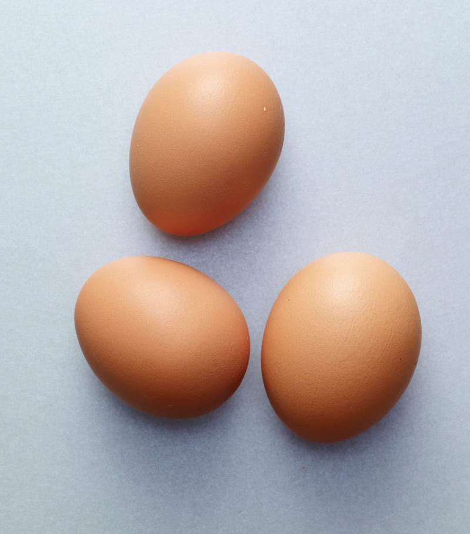

Diario Locuras
Como hacer un huevo duro con estos simples pasos
Esto, que podria parecer una tarea muy sencilla, puede ser complicado y peligoroso. Veamos como minimizar los riesgos con estos pasos

Ingredientes:
- -1 huevo
- -Una olla
- -Agua
- -Una hornalla a gas/eléctrica
- -Encendedor/fósforo
- -Manos
Instrucciones:
- 1- Llenar una olla grande con agua y llevar a ebullición.
- 2- Tomar el huevo y soltarlo en el agua hirviendo.
- 3- Dejar que el huevo esté en el agua durante unos minutos.
- 4- Sacar el huevo de la olla con una cuchara y dejarlo reposar durante 5 minutos
- 5- Tomar el huevo y golpearlo para asegurarse de que esté bien cocido.
- 6- Darse cuenta de que el huevo sigue crudo.
- 7- Regresar el huevo a la olla y llevarlo de nuevo a ebullición.
- 8- Dejar cocer el huevo durante 10 minutos más.
- 9- Conseguir una distracción como usar el celular olvidándose completamente del huevo y dejarlo en la olla durante 30 minutos más.
- 10- Sacar el huevo de la olla con cuidado y dejarlo enfriar.
- 11- Pelar el huevo y descubrir que está completamente mal hecho
- 12- Tirar el intento de huevo duro a la basura y resignarse a comer otra cosa menos apetecible en su lugar (como una ensalada)